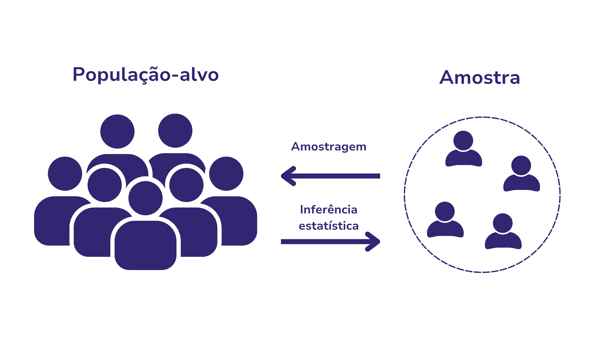

Módulo 2 | Aula 3
Introdução às pesquisas amostrais e principais fontes de dados
Conceitos Fundamentais
A compreensão das pesquisas amostrais é fundamental para produzir informações confiáveis e representativas, sobretudo quando a realização de um censo é inviável. Ao selecionar um subconjunto da população por métodos estatísticos rigorosos, essas pesquisas permitem gerar estimativas válidas e análises da população como um todo.
Conceitos como população-alvo, amostra, unidade de análise, amostragem probabilística e erros amostrais orientam todas as etapas do processo e asseguram a qualidade das inferências. Dominar esses fundamentos é essencial para construir indicadores consistentes e apoiar a tomada de decisões baseada em evidências na área da saúde.
O que é uma pesquisa amostral?
Uma pesquisa amostral é um tipo de estudo em que os dados são coletados apenas de uma parte representativa da população, chamada amostra, em vez de envolver todos os indivíduos do grupo de interesse (o que seria um censo). Para que os resultados sejam válidos, a amostra deve ser cuidadosamente planejada e selecionada por métodos estatísticos, de modo que suas características reflitam as da população total.
A principal vantagem das pesquisas amostrais é obter informações de forma mais rápida, econômica e operacionalmente viável, sem perda significativa de precisão. Quando bem planejadas, possibilitam estimar indicadores populacionais, identificar padrões, monitorar tendências e subsidiar decisões em diversas áreas com alto grau de confiabilidade.
Conceitos-chave
População-alvo é o conjunto total de elementos que se deseja estudar, enquanto amostra corresponde a um subconjunto desses elementos, selecionado para representar a população de forma fiel. O processo utilizado para escolher quem fará parte da amostra é chamado de amostragem, que pode seguir diferentes métodos, especialmente os probabilísticos, nos quais todos os indivíduos têm chance conhecida de serem selecionados.
A partir dos dados coletados nessa amostra, realizam-se inferências estatísticas, ou seja, conjunto de métodos que permitem tirar conclusões, estimar parâmetros ou testar hipóteses sobre uma população maior. Assim, população-alvo, amostra, amostragem e inferência formam a base das pesquisas amostrais, permitindo análises válidas mesmo quando não é possível investigar todos os indivíduos da população-alvo.
Figura 1 – População-alvo, amostra, amostragem e inferência estatística.

O tamanho da amostra, a representatividade populacional e o desenho amostral constituem dimensões interdependentes na construção de uma pesquisa robusta.
Corresponde ao número de unidades selecionadas da população para compor o estudo. Influencia diretamente a precisão das estimativas, o poder estatístico e a capacidade de generalização dos resultados.
É a estrutura metodológica que orienta como a amostra será selecionada, definindo procedimentos, critérios e etapas para equilibrar representatividade, viabilidade operacional e controle de vieses.
Refere-se ao grau em que a amostra reflete de forma fiel as características essenciais da população-alvo, permitindo generalizações mais seguras.
O rigor metodológico resulta da combinação equilibrada entre um desenho amostral coerente, uma seleção que assegure representatividade e um tamanho de amostra suficiente para sustentar inferências estatísticas confiáveis.
Tipos de amostragem
Desenho amostral é o processo usado para seleção das unidades amostrais com o objetivo de se obter uma amostra representativa da população-alvo. Existem diversas técnicas para a seleção de uma amostra da população-alvo, que se dividem em técnicas de amostragem probabilísticas e não probabilísticas.
Quando cada indivíduo da população tem uma probabilidade conhecida e não nula de ser selecionado na amostra, o que permite a generalização dos resultados para a população-alvo.
São vários os métodos de amostragem probabilística, sendo os mais utilizados:
Amostragem Aleatória Simples (AAS): cada membro da população tem uma chance igual e independente de ser selecionado. A população é enumerada, atribuindo-se um número a cada pessoa e estas podem ser selecionadas por sorteio, utilizando-se uma tabela de números aleatórios ou por meio de aplicativos estatísticos quando existe uma lista populacional informatizada.
Amostragem Sistemática: obedece-se a um sistema para a seleção das unidades. A população é enumerada, atribuindo-se um número a cada pessoa, e o total da população é dividido pelo tamanho da amostra para obtenção do intervalo sistemático. Escolhe-se um número aleatoriamente no primeiro intervalo. A seleção dos demais é feita a partir do sistema periódico (número inicial + intervalo; número inicial + 2 intervalos; e assim por diante). Cada membro da população tem uma chance igual de seleção, mas a escolha de um indivíduo não é independente do outro.
Amostragem Estratificada: consiste em dividir a população em subgrupos homogêneos para determinadas características e selecionar uma amostra em cada um deles, separadamente. Esses subgrupos não se interceptam e totalizam a população. Cada uma das subdivisões populacionais é denominada de estrato. Esse tipo de amostragem é recomendado quando se deseja obter estimativas com certa precisão para cada uma das subdivisões.
Amostragem por Conglomerados (Clusters): a unidade amostral é um conjunto de elementos da população. Devido às dificuldades de custo e de obtenção de listas dos elementos da população, a aplicação da amostragem por conglomerados é muito frequente em inquéritos de base populacional. Nesse tipo de amostragem, em inquéritos domiciliares, podem ser usados vários estágios de seleção, tais como setores censitários (divisão geográfica da população à época do censo demográfico), domicílios em cada setor censitário e indivíduo selecionado em cada domicílio.
Quando a probabilidade de seleção do indivíduo não é conhecida ou membros da população têm probabilidade nula de serem selecionados.
Entre os métodos mais utilizados, temos:
Amostragem por Conveniência: os participantes são escolhidos pela facilidade de acesso, sendo rápida e de baixo custo. Contudo, por não garantir representatividade, pode gerar vieses e limitações nas conclusões, sendo mais adequada para estudos exploratórios ou situações em que métodos probabilísticos não são viáveis.
Amostragem por Quotas: divide-se a população-alvo em categorias de interesse e, dentro dessas categorias, seleciona-se um determinado número de pessoas até alcançar a quota previamente estabelecida dentro de cada categoria. Embora seja rápida e prática, a seleção dentro de cada categoria não é aleatória, o que pode gerar vieses e limita a generalização dos resultados.
Amostragem Bola de Neve: é um método não probabilístico usado para acessar populações de difícil acesso. O processo começa com alguns participantes iniciais que, após responderem, indicam novas pessoas que também atendem aos critérios do estudo, formando uma cadeia de recrutamento. Embora facilite alcançar grupos invisíveis, o método pode gerar vieses, pois os participantes tendem a indicar pessoas semelhantes a si, selecionando quem está mais acessível.
Amostragem por Julgamento (ou Intencional): o pesquisador escolhe participantes que considera mais adequados ao estudo, com base em critérios subjetivos. Embora útil para acessar perfis específicos e aprofundar determinados temas, pode gerar vieses e não permite generalizações para a população.
Amostragem Voluntária (ou Acidental): os participantes são incluídos por estarem disponíveis ou por se oferecerem espontaneamente. Embora seja rápida e de baixo custo, tende a gerar vieses e não garante representatividade, sendo mais indicada para estudos exploratórios ou para obter percepções iniciais.
Desenhos complexos de amostragem
O desenho amostral na maioria das pesquisas não é composto apenas por um único tipo de técnica de amostragem, mas sim de uma combinação de vários métodos probabilísticos, seja por restrições orçamentárias e/ou por limites de tempo associados à coleta de uma grande quantidade de informações ao longo de um território geográfico grande. Essa combinação de várias técnicas probabilísticas de amostragem para seleção de uma amostra representativa da população-alvo é chamada de Desenho Complexo de Amostragem.
Os Desenhos Complexos de Amostragem são utilizados para aumentar a eficiência, a precisão e a viabilidade operacional de pesquisas que envolvem populações grandes, heterogêneas ou geograficamente distribuídas. Métodos como amostragem em conglomerados, estratificada ou em múltiplos estágios permitem captar melhor a estrutura real da população, reduzir vieses e garantir que subgrupos relevantes estejam adequadamente representados. Além disso, desenhos complexos geralmente diminuem custos e tempo de coleta, uma vez que possibilitam selecionar unidades em etapas e concentrar o trabalho de campo em áreas ou grupos específicos. Em síntese, utilizam-se desenhos amostrais complexos para equilibrar precisão estatística, representatividade e viabilidade logística, especialmente quando métodos simples seriam impraticáveis ou menos eficientes.
E, resultante desse processo, a preocupação subsequente é a análise de dados provenientes de amostras complexas (Bernal et al., 2017; Gindi et al., 2014; IBGE, 2017; Silva, 2004; Souza et al., 2015; Szwarcwald; Damacena, 2008; Vasconcellos et al., 2005). A inferência estatística, em sua abordagem clássica, se fundamenta na Amostragem Aleatória Simples — método que requer que cada membro da população tenha uma chance igual e independente de ser selecionado —, o que produz incorreções comprometendo os resultados e as conclusões da pesquisa amostral coletada a partir de um Desenho Complexo de Amostragem (Souza; Silva, 2003).
Para solucionar esse problema, a inferência estatística precisa levar em consideração o desenho amostral, ou seja, qual combinação de técnicas de amostragem foi utilizada para a seleção da amostra e assim corrigir os efeitos e produzir resultados fidedignos da população-alvo (Pessoa; Nascimento Silva, 1998; Szwarcwald; Damacena, 2008).
No caso de amostras complexas, é preciso ponderar os dados atribuindo pesos a cada indivíduo selecionado. A estimação para a população-alvo baseada no plano amostral é fundamentada na ponderação de cada elemento da amostra, proporcional ao inverso de sua probabilidade de seleção. O fator de expansão é estimado pelo inverso da probabilidade de seleção de cada elemento da amostra e provê estimativas para a população total. Já o peso provê estimativas para a amostra e é calculado pelo fator de expansão multiplicado por n/N, em que n é o tamanho da amostra e N é o tamanho da população. A amostra ponderada pelo peso é usada para estimar médias e proporções e realizar inferência estatística (Pessoa; Nascimento Silva, 1998).
Quer saber mais sobre Desenho Complexo de Amostragem e como corrigir os efeitos do desenho do plano amostral? Acesse o link!